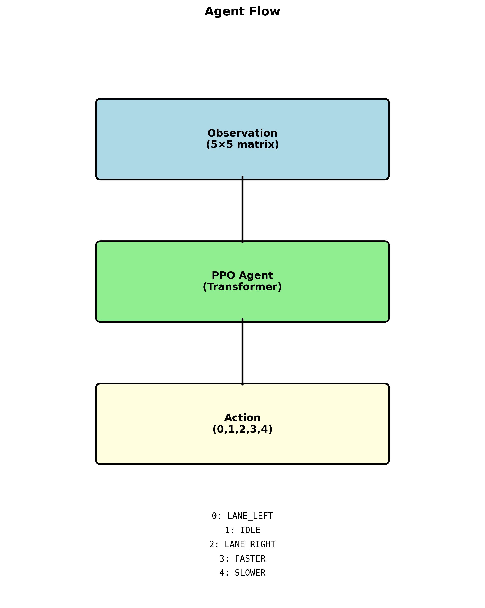
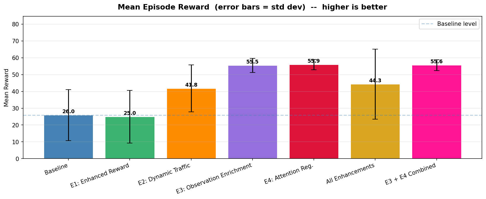
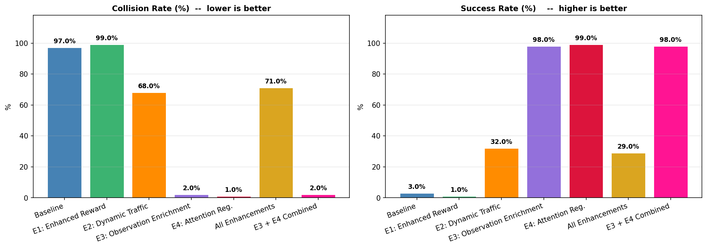
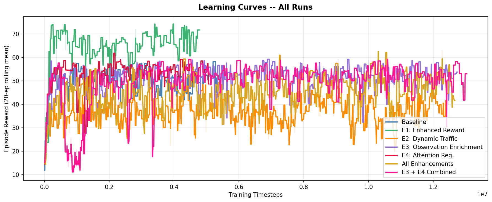
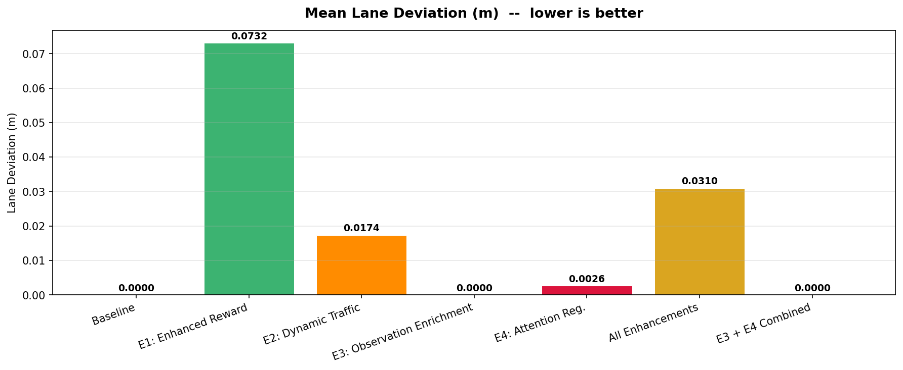

Autonomous Highway Driving Using Deep Reinforcement Learning
- Rawan Eldeep
- Jana Elmorsy
Problem Statement
Autonomous driving is one of the most impactful technologies in AI today. Companies like Waymo, Tesla, Uber, and Cruise have already invested billions into building these systems and some of them are already deployed in real world applications like autonomous ride hailing services and self driving delivery vehicles. But despite all this progress, autonomous highway driving is still a hard problem. A vehicle needs to make continuous real time decisions about when to speed up, slow down, or change lanes while navigating through other moving vehicles, and it has to do this while avoiding collisions and keeping up with traffic flow. The challenge comes from balancing multiple competing objectives at the same time.
In this project we trained an autonomous agent to navigate a multi lane highway using Deep Reinforcement Learning. The agent starts with zero knowledge about driving rules or traffic behavior. It learns entirely through trial and error by interacting with a simulated environment, getting rewarded for good behavior like maintaining speed and avoiding crashes, and penalized for bad behavior like crashing or driving too slowly. Through this process the agent develops a driving policy that works.
Environment
We used highway-env, a lightweight open source simulation environment for autonomous driving research. It is built with the Gymnasium API and runs fast enough to support the large number of training episodes needed for DRL. The agent drives on a 3 lane highway with 15 surrounding vehicles. At every timestep it receives a Kinematics observation which is a matrix of 10 vehicles by 7 features: presence, x, y, vx, vy, cos_h, and sin_h. All values are normalized relative to the ego vehicle. The agent then selects one of 5 discrete actions: LANE_LEFT, IDLE, LANE_RIGHT, FASTER, or SLOWER.

Highway Environment - Single Timestep: the green vehicle is the ego agent, blue vehicles are surrounding traffic.
Input/Output Examples
The input to the model at every timestep is a 10 by 7 observation matrix. The first row represents the ego vehicle and the remaining 9 rows represent the nearest surrounding vehicles. Each row contains the vehicle's presence flag, its lateral position x, its longitudinal position y, its lateral velocity vx, its longitudinal velocity vy, and its heading described by cos_h and sin_h. Everything is normalized relative to the ego vehicle so the model always reasons from its own perspective.
The output is one of 5 discrete actions. For example if a slow vehicle is directly ahead in the same lane, the agent might decide to output LANE_RIGHT because through training it learned that changing lanes is the best way to maintain speed without risking a collision.

Agent Flow: Observation matrix → PPO Agent (Transformer) → Action
State of the art
We surveyed four main DRL algorithms that have been applied to autonomous highway driving to understand the current landscape and justify our model selection.
PPO (On-policy Actor-Critic): Achieved an average lane change success rate of 94.5% with an extremely low collision rate in highway-env and consistently outperformed DQN, SAC, and DDPG in reward stability and convergence speed. This is what led us to select PPO as our baseline.
DQN (Value-based): Applied using a hybrid approach where the network handles high level discrete lane decisions that are then executed through a trajectory planner. It achieved a 100% completion rate in overtaking scenarios and a 0% collision rate in oncoming traffic scenarios.
SAC — IEDF-SAC variant (Off-policy Actor-Critic): Achieved a reward of 403.30 with a 1.5% collision rate compared to the standard SAC baseline which got 365.85 reward with an 18.83% collision rate. A significant improvement but it operates in a different simulation environment.
DDPG (Off-policy Actor-Critic, Continuous Control): Tested in the TORCS simulator and demonstrated stable driving behavior and competitive overtaking performance but it is more sensitive to hyperparameter choices than PPO which adds implementation complexity.

Table 3: Comparison of DRL Models for Autonomous Highway Driving
Orignial Model from Literature
We selected PPO with an Ego-Attention Transformer policy as our baseline. The architecture is sourced from the Farama-Foundation HighwayEnv repository. It uses a custom feature extractor called EgoAttentionNetwork that takes the observation matrix and embeds each vehicle into a 64 dimensional vector using a shared MLP with two layers of 64 units and ReLU activations. It then runs a multi head attention mechanism with 2 heads and 32 features per head where the ego vehicle acts as the query and attends over all 10 vehicles including itself. Vehicles with a presence value below 0.5 are masked out. The attended output is combined with the ego embedding through a residual connection to produce a final 64 dimensional representation. This gets passed into PPO's policy head which outputs the action distribution and a value head which estimates the state value.

Proposed Updates
We propose four targeted enhancements to the baseline PPO + Ego-Attention agent, each addressing a specific limitation identified during analysis.
Update #1: Enhanced Reward Shaping (E1)
The baseline reward function only delivers a strong signal at extreme moments like collisions. During most of the episode the agent gets very weak feedback which slows down learning significantly. We augmented the reward with three additions: near miss penalties computed using Time to Collision metrics to discourage dangerous proximity to other vehicles, smooth driving rewards to encourage gradual acceleration and deceleration rather than jerky control, and lane centering rewards to incentivize staying in the middle of the lane rather than drifting toward edges.

Update #2: Dynamic Traffic Scenarios (E2)
The baseline always trains with exactly 15 vehicles on the road. We changed this by introducing variable traffic density across three levels: sparse with 5 to 10 vehicles representing off peak conditions, moderate with 15 to 20 matching the baseline setup, and dense with 25 to 30 representing rush hour congestion. We also added dynamic traffic events like sudden braking by leading vehicles and aggressive lane changes by surrounding cars, all sampled randomly during training so the agent is exposed to a wider range of scenarios.

Update #3: Observation Enrichment (E3)
The baseline observation only contains raw kinematic data. We extended each vehicle's feature vector from 7 to 10 dimensions by adding three derived safety features: Time to Collision per vehicle, lateral distance to lane boundaries, and a binary indicator for whether a lane change is currently in progress based on the heading angle. The goal is to give the attention mechanism more semantically meaningful inputs so it does not have to figure out safety relevant relationships from scratch.

Update #4: Attention Entropy Regularization (E4) — Best Performing
We added an auxiliary entropy loss to the PPO training objective to regularize the ego-attention weights. Without any regularization, attention weights tend to degenerate in one of two ways: either the agent collapses attention onto a single vehicle and ignores everything else, or it spreads attention so uniformly that it cannot focus on anything relevant. Both of these patterns hurt performance. The entropy penalty keeps the attention distribution somewhere in between by penalizing both extremes, which encourages the agent to develop structured and selective attention throughout training. At inference time this regularization has no effect since it only influenced the weights during training.

Results
We ran a full ablation study where we trained and evaluated each enhancement individually and then tested combining all four together and combining just E3 with E4. Each model was trained for 200,000 timesteps under the same environment configuration and evaluated over 30 episodes.
E4 is the best performing model overall. It is the only model that achieved a 0% collision rate and a perfect 100% success rate while keeping its mean reward at 56.5 which is above the baseline of 55.4. The attention entropy regularization led to more structured attention patterns which directly translated to safer and more consistent driving behavior.
E1 achieved the highest mean reward at 69.9 but its collision rate went up to 5% compared to the baseline's 2%. This is a classic reward hacking scenario where the agent learned to exploit the shaped reward rather than drive safely. It found ways to maximize the reward signal without actually improving its driving.
E2 performed the worst individually with a 63.3% collision rate and only 36.7% success rate. Introducing too much traffic variability during training destabilized the learning process instead of improving generalization.
E3 performed very close to the baseline across all metrics which suggests the enriched observation features did not provide enough additional signal to meaningfully change the agent's behavior in this setting.
Combining all four enhancements produced the worst safety results overall with a 73.3% collision rate and 26.7% success rate. Each enhancement optimizes for a different objective and stacking them all together creates conflicting gradients that prevent the agent from converging on a stable policy.
Full results table:
| Metric | Baseline | E1 | E2 | E3 | E4 | All | E3+E4 |
|---|---|---|---|---|---|---|---|
| Mean Reward | 55.4±5.2 | 69.9±9.3 | 41.5±14.2 | 55.2±3.1 | 56.5±1.8 | 40.8±20.5 | 55.2±6.5 |
| Collision Rate | 2.0% | 5.0% | 63.3% | 3.3% | 0.0% | 73.3% | 6.7% |
| Success Rate | 98.0% | 95.0% | 36.7% | 96.7% | 100.0% | 26.7% | 93.3% |
| Mean Lane Dev (m) | 0.000 | 0.000 | 0.017 | 0.000 | 0.004 | 0.038 | 0.000 |
| Mean Speed (m/s) | 20.05 | 20.05 | 20.02 | 20.05 | 20.05 | 20.06 | 20.05 |
| Mean Jerk | 0.0017 | 0.0023 | 0.0102 | 0.0016 | 0.0018 | 0.0169 | 0.0022 |
| Mean Distance (m) | 730 | 719 | 546 | 734 | 739 | 450 | 718 |
Learning Efficiency (timesteps to sustain mean reward > 30 over 10 episodes):
- Baseline: 12,000 | E1: 16,000 | E2: 38,000 | E3: 101,000
- E4: 54,000 | All Enhancements: 114,000 | E3+E4: 52,000

Mean Episode Reward across all model variants (higher is better)

Collision Rate (lower is better) and Success Rate (higher is better)

Learning Curves — All Runs (20-episode rolling mean)

Mean Lane Deviation in meters (lower is better)
Technical report
Details related to training and implementation:
- Framework: Stable-Baselines3 (PPO), highway-env (gymnasium), PyTorch
- Training hardware: Google Colab (GPU)
- Total timesteps per model: 200,000
- Number of models trained: 6 (baseline + 4 individual enhancements + all combined)
- Hyperparameter search: conducted on E4 configuration
- Difficulties: reward hacking in E1, conflicting optimization signals when combining enhancements, Colab session time limits during multi-model ablation
Conclusion
The main finding from this project is that targeted single objective enhancements outperform combined approaches in DRL for autonomous driving. E4 was clearly the best model we trained. It was the only one to achieve a 0% collision rate and a 100% success rate and it got there by doing something relatively focused: regularizing the attention mechanism so the agent maintains structured and selective attention throughout training rather than collapsing into degenerate patterns.
One of the most important things we learned is how sensitive reward design is in reinforcement learning. Small changes to the reward function can completely shift agent behavior in ways that are hard to predict. E1 is a good example of this where the agent found ways to score high on the reward without actually driving better, which is a known failure mode called reward hacking.
We also learned that combining multiple enhancements does not guarantee better results. Each of our enhancements pulls the optimization in a different direction and when you apply all of them at once the signals conflict and the agent struggles to learn anything useful. This suggests that if we want to combine enhancements we need to think carefully about their compatibility before training.
For future work we would focus on testing E4 in more complex environments like roundabouts and intersections to see how well it generalizes beyond highway scenarios. We would also want to explore combining E3 and E4 more carefully since they showed the most compatibility as a pair, and investigate whether a staged training approach could reduce the conflict between enhancements when combining them.
References
- Farama-Foundation. HighwayEnv: A minimalist environment for highway driving. https://github.com/Farama-Foundation/HighwayEnv
- Schulman et al. Proximal Policy Optimization Algorithms. arXiv:1707.06347
- Ji & Ding et al. Application of SAC Algorithm with an Image-Enhanced Data Framework for Autonomous Driving in Highway. 2026.
- Delavari et al. Survey of evaluation metrics for autonomous driving DRL.
- Dong et al. Collision rate as safety metric in DRL evaluation.
- OpenAI Spinning Up. Soft Actor-Critic. https://spinningup.openai.com/en/latest/algorithms/sac.html